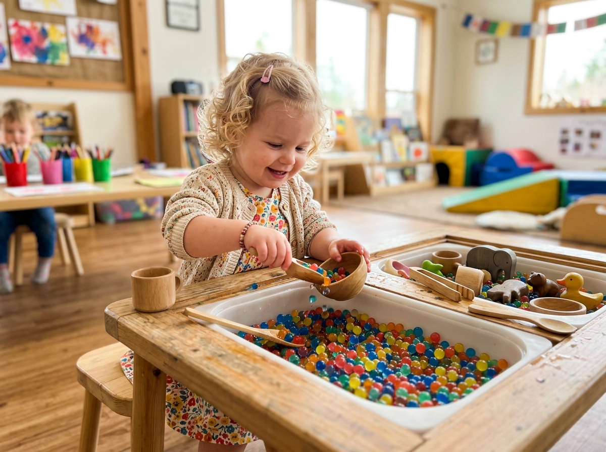
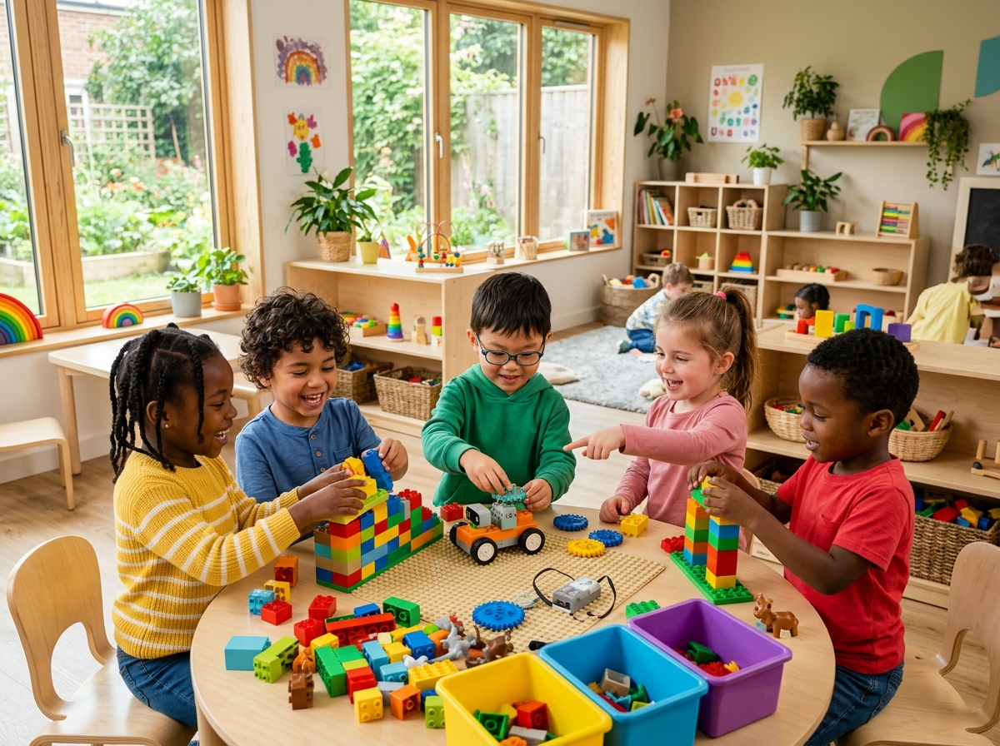
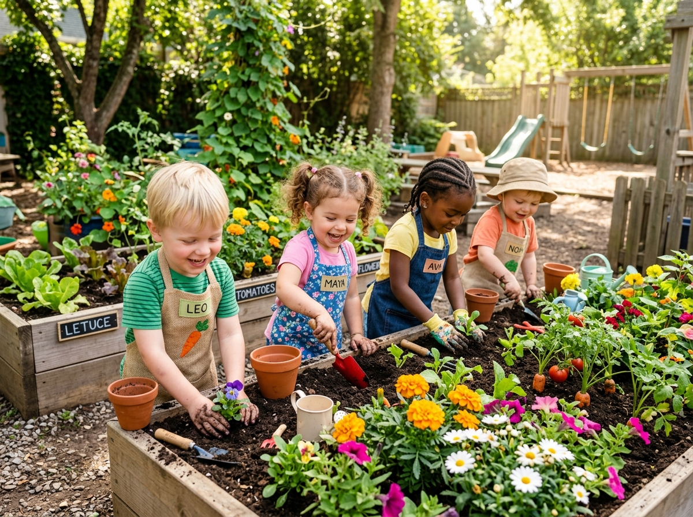

The Science & Art Of Child-Centered Discovery
Our educational philosophy seamlessly weaves Montessori self-directed exploration, Reggio Emilia environmental inspiration, and modern developmental neuroscience into an empowering environment for young minds.
Nurturing Neural Connections During Peak Growth (Ages 0-5)
By age 5, 90% of a child's brain structure is formed. Our daily interactions are scientifically engineered to foster neural plasticity through sensory stimulation and responsive emotional bonding.
1 Million Synapses Per Second
Multi-sensory play objects stimulate rapid neural connections and pattern recognition.
Serve & Return Emotional Interactions
Educators respond attentively to vocalizations, building emotional stability and trust.


Empowering Curiosity Through the Scientific Method
Instead of giving direct answers, our educators ask open-ended questions like "What happens if we stack these higher?" or "Why does water float here?" turning play into genuine scientific inquiry.
Tactile Geometry & Structural Play
Building wooden arches and balancing scales to master physics and spatial reasoning.
Hypothesis & Trial Exploration
Encouraging children to test ideas, embrace mistakes, and refine their conclusions.
Nature as the Ultimate Educator
Direct contact with nature builds physical stamina, reduces stress, and fosters deep environmental respect. Our daily outdoor curriculum includes gardening, mud kitchen play, and seasonal weather observation.
Organic Seed-to-Table Gardening
Children plant, water, and harvest vegetables used in our daily chef-prepared lunches.
All-Weather Outdoor Resilience
Equipped with rain gear, children explore puddles and soil in every season.


Co-Regulation, Mindful Breathing & Kindness Circles
Emotional literacy comes before academic testing. We teach children to name their emotions, practice deep breathing during big feelings, and practice gentle conflict resolution.
Emotion Vocabulary & Labeling
Helping toddlers identify feeling happy, frustrated, or excited using visual emotion cards.
Peer Peace-Making Protocol
Guided conversation tools where children express boundaries and apologize with genuine care.
The 100 Languages of Art, Music & Dramatic Play
Inspired by Loris Malaguzzi's Reggio Emilia philosophy, we believe children express thought through a hundred languages: clay, paint, shadows, dance, theater, and construction.
Atelier Art Studio
Open access to watercolors, clay modeling, charcoal, and natural loose-part materials.
Acoustic Movement & Drama
Daily rhythm instruments, storytelling puppet shows, and costume roleplay.


Authentic Observation Without Standardized Pressure
We don't grade young children. Instead, our educators document authentic learning moments through photo portfolios, learning stories, and developmental milestone check-ins shared directly with parents.
Live Parent Portal Milestone Feed
Receive daily photo stories and developmental updates directly on your mobile device.
Graduation Memory Keepsakes
Comprehensive physical & digital art portfolios presented to every graduating family.